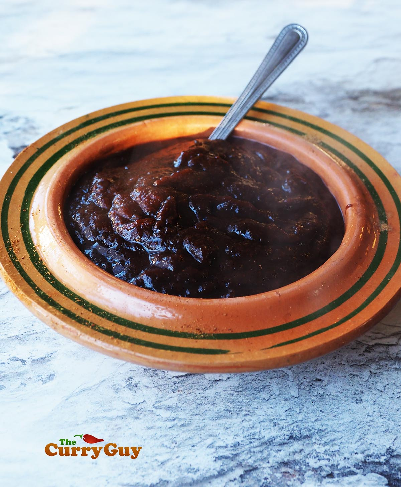

tamarindesaus
voor 250 ml

Een heerlijke zure tamarindesaus
Je kunt natuurlijk naar smaak meer of minder suiker toevoegen en zo aanpassen aan je eigen smaak.
Er gaat niets boven een gerecht naar een hoger niveau tillen met een Heerlijke zelfgemaakte saus.
Ingredienten:
- 200gr tamarindepulp (blok, o.a. toko)
- 1 tl komijnpoeder
- 1 tl chaat masala
- ½ tl gemberpoeder
- ½ tl chilipoeder naar smaak
- 1 el suiker of palmsuiker naar smaak
- zout
stappen:
- Breek het blok tamarinde in ongeveer 6 stukken.
voeg toe aan een kleine pan en schenk er 375 ml water bij.
breng op middelhoog vuur zachtjes aan de kook,
roer gedurende 5 minuten regelmatig door, haal de pan van het vuur en laat 5 minuten afkoelen.
- Prak de tamarinde met een pureerstamper in het water tot een dikke saus met een consistentie van ketchup.
Schenk de saus door een zeef in een kom en druk met een leper het vocht uit de pulp, tot je een dikke pasta krijgt.
Gooi de pulp weg.
Schep de tamarindepasta terug in de pan en voeg toe:
- het komijnpoeder
- (eventueel) de chaat masala
- het gemberpoeder
- het chilipoeder
- de suiker
- Laat ongeveer 3 minuten pruttelen.